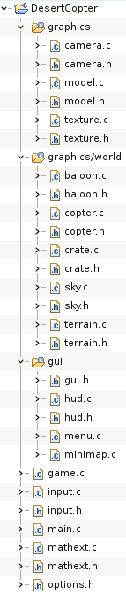
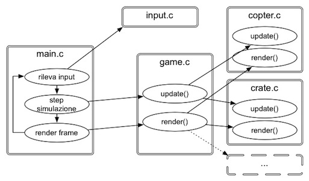

L'elaborato è scritto interamente in linguaggio C (la specifica utilizzata è la gnu99, ampiamente supportata da gcc). I numerosi sorgenti sono organizzati secondo il seguente schema:
La cartella root contiene i sorgenti principali del progetto: main.c e game.c, la definizione di strutture e funzioni per il calcolo vettoriale (mathext.h), per la definizione delle opzioni di gioco (options.h) e per la gestione dell'input (input.h).
main.c definisce il punto d'ingresso dell'intero programma. In questo modulo si trovano le variabili di stato principali (dimensione viewport, opzioni correnti, temporizzazioni, …), le funzioni di inizializzazione/chiusura principali relative a SDL e OpenGL, la procedura primaria per la renderizzazione di un frame e il ciclo di gioco. main.c è responsabile anche di interagire coi menu utente.
game.c si preoccupa di gestire tutto ciò che interessa esclusivamente la scena di gioco. Al suo interno si trovano le funzioni di inizializzazione per i vari elementi che compongono l'ambientazione (cielo, terreno, elicottero, cassa, …), le funzioni per gestire il loro stato e – sopratutto – le procedure per la loro resa grafica.
Il loop di gioco in main.c è organizzato per seguire fondamentalmente tre step:
processing degli eventi SDL, in particolar modo quelli relativi all'input utente. La gestione dell'input è affidata a input.c e prevede la compilazione di una struttura dati (InputState) che contiene lo stato corrente dell'input (tastiera, gamepad, mouse) e che verrà passata ai componenti del gioco che ne hanno bisogno. In questo modo main.c e input.c sono gli unici sorgenti che si interfacciano direttamente a SDL.
simulazione fisica. In questo step si determina l'evoluzione della logica di gioco in un arco temporale (slot) prefissato e pari a 10 millisecondi. Ogni oggetto “vivo” della scena attraversa questa fase e aggiorna il proprio stato in base a quello dello slot precedente e alle azioni dell'utente rilevate nello step 1. Tutte le funzioni adibite a questa fase iniziano col prefisso “update”.
resa grafica. In questo ultima parte vengono richiamate in un ordine ben preciso le diverse procedure responsabili del rendering dei diversi oggetti di scena e di interfaccia utente. Ognuna di queste inizia col prefisso “render” se si tratta di elementi di scena, oppure “draw” nel caso di elementi di user-interface (GUI). La funzione di rendering principale (renderFrame()) si preoccupa di impostare adeguatamente lo stato OpenGL per la resa di un nuovo frame, di richiamare in successione le diverse procedure grafiche (prima quelle relative alla vista 3D, poi quelle di “disegno” dell'interfaccia) e infine di effettuare lo scambio tra front e back buffer.
La cartella gui contiene i sorgenti e gli header per quei componenti che realizzano l'interfaccia utente. Si distinguono principalmente menu.c, responsabile per la gestione e disegno dei menu di gioco e hud.c per disegnare gli indicatori dell'HUD (head-up display).
graphics contiene al suo interno la definizione di tre componenti di importanza fondamentale: camera.c per la gestione della telecamera di vista, model.c per il caricamento e il rendering di mesh tridimensionali e texture.c per il caricamento e il processing di texture. Vista la loro importanza, a ciascuno di questi moduli è dedicata una sezione specifica della documentazione.
Infine, la cartella world all'interno di graphics contiene la descrizione dei vari oggetti che popolano la scena di gioco. Sono utilizzati direttamente da game.c e comprendono i sorgenti per la gestione e la resa dell'elicottero, del terreno, dei palloni aerostatici, delle casse e della skybox.
